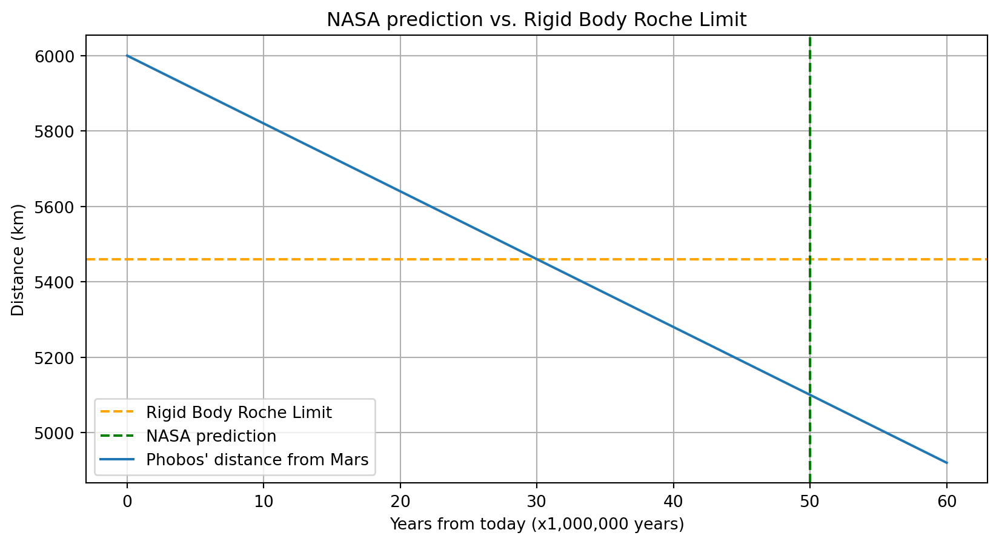
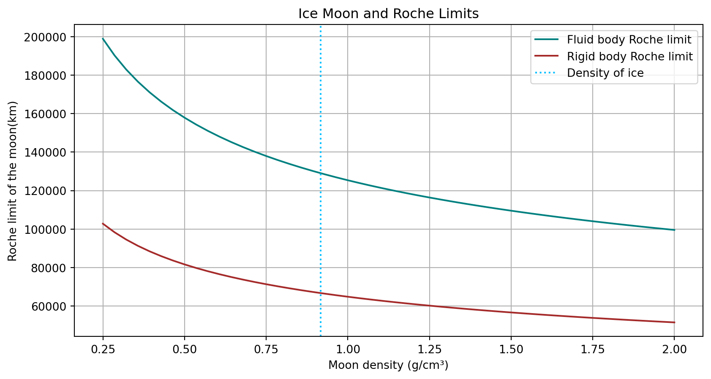
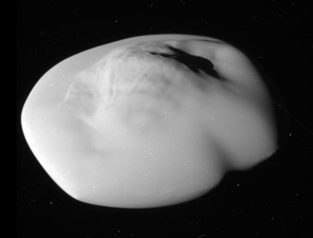

Roche Limit
Kyle Song
2023-06-21
Roche Limit Origin Story
- Derived by Édouard Roche to explain the formation of Saturn’s rings
- Origins of the rings were unknown at the time, so Roche derived an equation to solve the mystery

What is the Roche Limit?
- The distance that a celestial object, such as a moon, can be from a more massive object before it breaks into smaller pieces
- When the tidal forces caused by the planet’s gravity are stronger than the moon’s self-gravity
- Stretching effect and disintegration
Roche Limit Equation
There are two models representing the Roche limit, representing rigid and liquid bodies.
The following model represents a rigid body, in which the object is spherical. This neglects the irregular shapes formed by tidal stretching, and therefore is less accurate:
\[ d_{rigid} = R_{M}(2 \frac{\rho _{M}}{\rho_{m}})^{\frac{1}{3}} \]
in which \(d_{rigid}\), \(R_{M}\), \(\rho _{M}\), and \(\rho _{m}\) represent the Roche limit, radius of the primary object, the density of the primary object, and the density of the satellite, respectively.
Fluid Body Model
Similarly, the following model represents a fluid body, in which there are no internal binding forces:
\[ d_{fluid} = 2.44R_{M}(\frac{\rho _{M}}{\rho_{m}})^{\frac{1}{3}} \]
in which \(d_{rigid}\), \(R_{M}\), \(\rho _{M}\), and \(\rho _{m}\) represent the Roche limit, radius of the primary object, the density of the primary object, and the density of the satellite, respectively.
In reality, most celestial objects are neither entirely rigid nor fluid; therefore, these two equations may only serve as a framework for estimating the point at which a satellite disintegrates.
functionPlot = require("function-plot@1.22.2/dist/function-plot")
{
var limit;
var limitColor;
if (model == "Rigid"){
limit = primaryRadius * Math.pow(densityLarger/densitySmaller * 2, 1/3)
limitColor = '#a3f333'
} else {
limit = 2.44*primaryRadius*Math.pow(densityLarger/densitySmaller,1/3)
limitColor = '#5588f5'
}
let target = DOM.element('div')
const width = 600
const height = 400
var planetColor = (13740668 - (parseInt(densityLarger * 6) * 65793)).toString(16)
var dotColor = (13740668 - (parseInt(densitySmaller * 6) * 65793)).toString(16)
// desired xDomain values
const xScale = [-1, 2]
functionPlot({
width: width,
height: height,
yAxis: {domain: [-1*Math.pow(primaryRadius, 21/20)*2, Math.pow(primaryRadius, 21/20)*2]},
xAxis: {domain: [-1*Math.pow(primaryRadius, 21/20)*3, Math.pow(primaryRadius, 21/20)*3]},
xDomain: xScale,
yDomain: computeYScale(width, height, xScale),
target,
data: [
//outer circle
{ fn: 'sqrt(' + limit * limit + ' - x * x)', closed:false, color: limitColor, skipTip: true },
{ fn: '-sqrt(' + limit * limit + ' - x * x)', closed:false, color: limitColor, skipTip: true},
//inner circle
{ fn: 'sqrt(' + primaryRadius * primaryRadius + ' - x * x)', closed:true, color: '#' + planetColor, skipTip: true },
{ fn: '-sqrt(' + primaryRadius * primaryRadius + ' - x * x)', closed:true, color: '#' + planetColor, skipTip: true},
{points: [
[limit * Math.cos(t), limit * Math.sin(t)],
],
fnType: 'points',
graphType: 'scatter',
color: dotColor},
]
})
return target
}function computeYScale (width, height, xScale) {
const xDiff = xScale[1] - xScale[0]
const yDiff = height * xDiff / width
return [-yDiff / 2, yDiff / 2]
}Both Models
{
let target = DOM.element('div')
const width = 600
const height = 400
let rigidLimit = primaryRadius * Math.pow(densityLarger/densitySmaller * 2, 1/3)
let fluidLimit = 2.44*primaryRadius*Math.pow(densityLarger/densitySmaller,1/3)
var planetColor = (13740668 - (parseInt(densityLarger * 6) * 65793)).toString(16)
// desired xDomain values
const xScale = [-1, 2]
functionPlot({
width: width,
height: height,
grid: true,
yLabel: 'test',
yAxis: {domain: [-1*Math.pow(primaryRadius, 21/20)*2, Math.pow(primaryRadius, 21/20)*2]},
xAxis: {domain: [-1*Math.pow(primaryRadius, 21/20)*3, Math.pow(primaryRadius, 21/20)*3]},
xDomain: xScale,
yDomain: computeYScale(width, height, xScale),
target,
data: [
//rigid limit
{ fn: 'sqrt(' + rigidLimit * rigidLimit + ' - x * x)', closed:false, color: '#a3f333', skipTip: true},
{ fn: '-sqrt(' + rigidLimit * rigidLimit + ' - x * x)', closed:false, color: '#a3f333', skipTip: true},
//fluid limit
{ fn: 'sqrt(' + fluidLimit * fluidLimit + ' - x * x)', closed:false, color: '#5588f5', skipTip: true},
{ fn: '-sqrt(' + fluidLimit * fluidLimit + ' - x * x)', closed:false, color: '#88aaf8', skipTip: true},
{points: [
[Math.cos(t) * rigidLimit, Math.sin(t) * rigidLimit],
[fluidLimit * Math.cos(t), fluidLimit * Math.sin(t)],
],
fnType: 'points',
graphType: 'scatter'},
//planet
{ fn: 'sqrt(' + primaryRadius * primaryRadius + ' - x * x)', closed:true, color: '#' + planetColor, skipTip: true },
{ fn: '-sqrt(' + primaryRadius * primaryRadius + ' - x * x)', closed:true, color: '#' + planetColor, skipTip: true },
]
})
return target
}Saturn’s Rings
Saturn has rings nearly entirely composed of ice. They were likely a result of the disintegration of an ice moon orbiting too close to Saturn, surpassing its Roche limit.

Modern applications
Mars’ Moon, Phobos
Phobos
- One of Mars’ two moons, orbiting at about 6,000km above Mars’ surface
- Approaches Mars at a rate of approximately 1.8 meters per 100 years
- Expected to disintegrate as it approaches its Roche limit
- This is predicted to happen in the next 10-50 million years

Graphs with Code
import numpy as np
import matplotlib.pyplot as plt
x = np.linspace(0,60)
y = -x*18+6000
plt.grid(True)
plt.axhline(5460.393, linestyle = 'dashed', label = "Rigid Body Roche Limit", color = "orange")
plt.axvline(50, linestyle = 'dashed', label = "NASA prediction", color = "green")
plt.plot(x, y, label = "Phobos' distance from Mars")
plt.title("NASA prediction vs. Rigid Body Roche Limit")
plt.xlabel("Years from today (x1,000,000 years)")
plt.ylabel("Distance (km)")
plt.legend(loc='lower left')
plt.show()p=np.linspace(0.25,2)
d=2.44*58232*pow(0.687/p,(1/3))
r=58232*pow(2*0.687/p, (1/3))
plt.grid(True)
plt.plot(p,d, color = 'teal', label = 'Fluid body Roche limit')
plt.plot(p,r, color = 'brown', label = 'Rigid body Roche limit')
plt.axvline(0.917, color = 'deepskyblue', linestyle = 'dotted', label = 'Density of ice')
plt.legend(loc='upper right')
plt.title("Ice Moon and Roche Limits")
plt.xlabel("Moon density (g/cm³)")
plt.ylabel("Roche limit of the moon(km)")
plt.show()
Future Implications
- Formation of rings and planets
- If a planet is within the Roche limit of its star, it likely experiences extreme tidal forces and may result in deformation or destruction
- Exoplanets
- Further destruction of celestial objects in our solar system
- Saturn’s moons: Atlas and Pan
